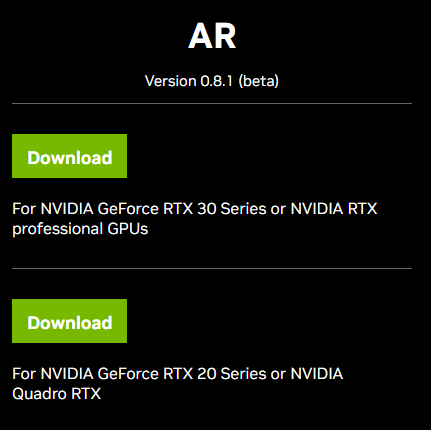
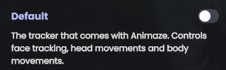
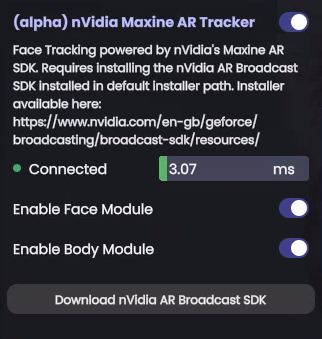
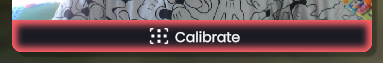

Using (alpha) Maxine AR Face Tracking in Animaze
Animaze has added support for Maxine AR SDK with Face & Shoulders Tracking capabilities. Integration is still alpha version so there are things missing from the normal embodiment experience and UX (e.g. advanced tracking configurations).
There are two major requirements for this tracker to work:
-
hardware requirement: RTX series NVIDIA graphics card
-
software requirement: the NVIDIA AR SDK installed from NVIDIA Broadcast Software Integrations: Download Resources
Usage steps:
-
make sure you have the NVIDIA AR SDK installed appropriate to your graphics card. Installer here: NVIDIA Broadcast Software Integrations: Download Resources

-
Open Animaze
-
Go to Settings > Advanced Tracking Configurations > Select Trackers
-
Toggle off the Default Tracker

-
Toggle on the (alpha) NVIDIA Maxine Face Tracker
-
(optional) Toggle the Body Module for shoulder’s tracking

-
Calibrate using the button on the webcam feed or using the hotkey Ctrl + C

-
Done
Known limitations:
-
body forward/backward movement is currently disabled as it is not stable enough.
-
advanced configurations (smoothing values and expression ranges) are not available, although they can be manually altered by modifying the MaxineFilterConfigDefault.json file from <AnimazeInstallFolder>/Data/ folder.
-
sad eyebrows are currently disabled as there’s no consistent method to determine them.
-
dropping the jaw while lips are still sealed, the avatar will open the mouth. Done to enhance normal speech movement, as accounting for both tracking units will make normal speech undetectable.